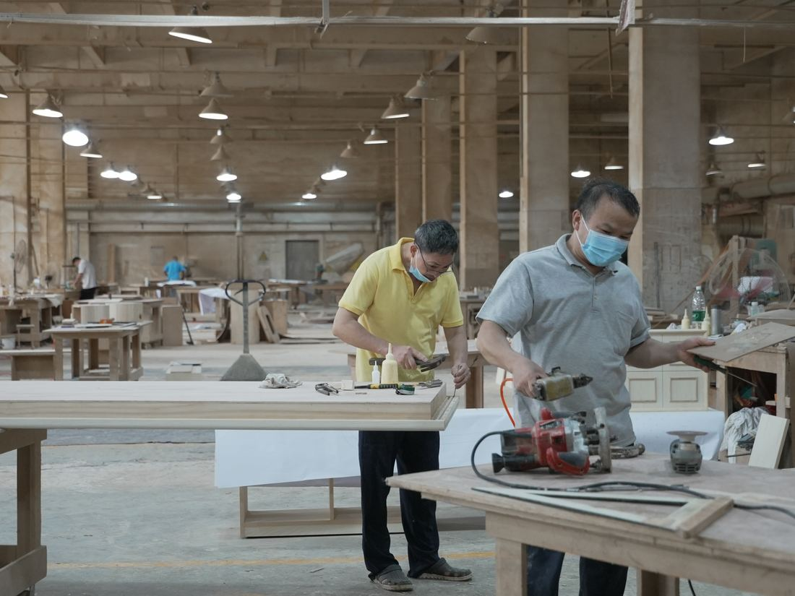
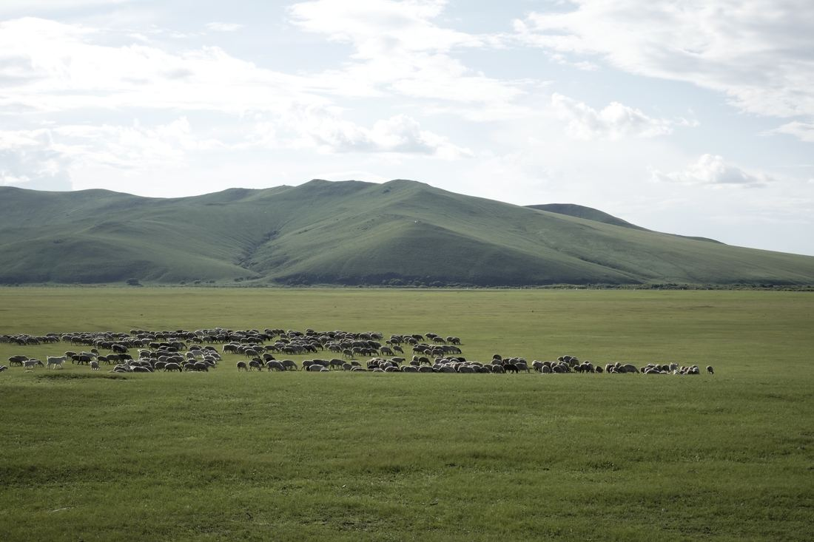
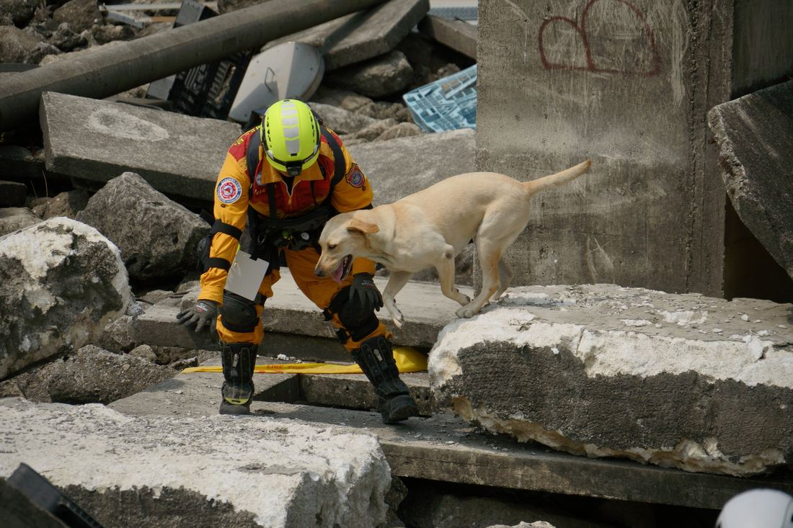

跳到主要內容
林佳玟
Jia Wen Lin
關於
報導
攝影
影音
Photography
攝影
五組專題攝於2024年至2026年。點擊縮圖瀏覽作品。
目錄

01
中國製造
Made in China
中國 廣東 · 2026.07 · 12 張
02
就職
Inauguration
美國 紐約 · 2026.01 · 11 張

03
放牧地
Grazing Land
中國 內蒙古 · 2025.08 · 11 張

04
碎石上的腳掌
Paws on the Rubble
台灣 · 2024.04–05 · 11 張
05
街與河
Street and River
印度 · 2024.04 · 16 張